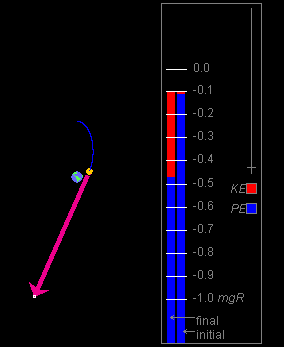

Prerequisites
Students should be familiar with Newton's second law and Newton's universal law of gravitation. They should be familiar with the concept of potential energy and the expression for gravitational potential energy near the surface of the earth.
Learning Outcomes
Students will develop an understanding of how the gravitational potential energy of an object in the earth's gravitational field varies with the object's elevation above the surface of the earth, and they will learn to apply the law of energy conservation to predict the speed of an object moving in the earth's gravitational field.
Instructions
Students should know how the applet functions, as described in Help and ShowMe.
The applet should be open. The step-by-step instructions in the following text are to be done in the applet. You may need to toggle back and forth between instructions and applet if your screen space is limited.
 Laws, Theorems, Terminology
Laws, Theorems, Terminology
 Newton's Second Law
Newton's Second Law
 Newton's Law of Universal Gravitation
Newton's Law of Universal Gravitation
 Gravitational Potential Energy of Particle-Earth
System
Gravitational Potential Energy of Particle-Earth
System
 Mechanical Energy and Its Conservation
Mechanical Energy and Its Conservation
 Potential Energy as Function of Satellite-Earth
Distance
Potential Energy as Function of Satellite-Earth
Distance
 Appendix A: A Useful Expression for the Potential
Energy
Appendix A: A Useful Expression for the Potential
Energy
 Appendix B: Approximation to the Potential
Energy
Appendix B: Approximation to the Potential
Energy

The sum of all forces1,
,
(1)

Any two particles of masses m1 and m2 exert attractive gravitational forces on each other. Particle 1 exerts a force on Particle 2 that is directed towards Particle 1 and, vice versa, Particle 2 exerts a force on Particle 1 that is directed towards Particle 2. Both forces have the same magnitude F equal toF = Gm1m2 / d2
where d is the separation between the two particles and G is the universal gravitaional constant whose value is
G = 6.673×10-11 m3 kg-1 s-2.
Comment on the force of gravity exerted by the earth on a particle at the surface of the earth or above. Newton's law of gravitation describes the gravitational forces that two point particles exert on each other. The earth is not a point particle and, therefore, Newton's law of gravitation does not directly give the force exerted by the earth on a particle.
However, as stated under Assumptions in the menu above, the applet assumes the earth to be a sphere of uniform mass density. Under this assumption, it can be proved that the gravitational force exerted by the earth on a particle at the surface of the earth or above is the same as that exerted by a point particle at the center of the earth that carries all of the earth's mass M. Therefore, the magnitude W of the force of gravity exerted by the earth on a particle of mass m at a distance d from the center of the earth is given by
W =
GMm / d2 . (4)
(4)
The quantity W is called the weight of the particle. Note that the weight depends on how far the particle is away from the center of the earth, but not on the particle's state of motion.
Particle Near the Surface of the Earth
If the particle's elevation h above the surface of the earth is much smaller than the earth's radius R, one can use the following expression PE' for the potential energy of the particle-earth system:PE' = mgh,
where g is the magnitude of the acceleration due to gravity at the surface of the earth.
Comment 1. The prime following the symbol PE in the potential energy expression (5) is used in this applet to distinguish this expression from the following Expression (6). The two expressions differ in two ways: (a) Expression (5) is approximate while Expression (6) is exact and (b) the two expressions differ by an added constant. See Comment 3 below.
Note that an added constant in the potential energy is unobservable, because only changes in potential energy are observable, and that an added constant will not affect the difference between two values of the potential energy.
Particle at Arbitrary Distances from the Surface of the Earth
The gravitational potential energy PE of a particle-earth system at arbitrary distances d of the particle from the center of the earth is given byPE = -GMm / d .
Expression (6) can also be written in the useful form
PE = -mgR (R/d)
which is derived in Appendix A.
Comment 2. PE is negative for all finite values of d. There is nothing strange about negative values of the potential energy. One can always add a negative constant to any potential energy and thus make it negative. Adding a constant to a potential energy has no observable consequences. See Comment 1 above.
Comment 3. Expressions (6) and (7) give PE = 0 when the particle is infinitely far from the earth while Expression (5) gives PE' = 0 when the particle is at the surface of the earth (h = 0). Since Expression (7) gives PE = -mgR at the surface of the earth (set d = R), PE and PE' are related as follows:
PE' = PE + mgR,  h <<
R.
h <<
R.  (8)
(8)
Thus, PE and PE' differ by an additive constant.
Comment 4. The derivation of Expression (6) for PE requires calculus since the force of gravity is not constant but varies with the particle's distance from the earth. The derivation is given in calculus-based texts and will not be reproduced here. Expression (5) can be derived from Expression (6). This derivation is shown in Appendix B. It is not often found in texts.
Comment 5. Note carefully that in Expressions (6) and (7) for the potential energy we have the first power of d in the denominator, not the second power as in Expression (4) for the weight. Check that this is consistent dimensionally with the definition of work and energy as the product of force and length. (However, you can't derive Expression (6) by multiplying the weight (4) by the factor d!)
Comment 6 (Important). The potential energy given by Expression (6),
PE = -GMm /
d ,
is a joint potential energy for the particle-earth system. It is not possible to write this potential energy as a sum of a potential energy for the particle and one for the earth.
Note that properties of both the earth and the particle enter symmetrically into this expression: each object is represented by its mass in the same manner, and the distance d between the two objects depends on the positions of the two objects in a symmetric manner as well.
Thus, PE is the potential energy of the particle-earth system. Nevertheless, it is customary to refer to this potential energy as the "potential energy of the particle", for brevity's sake. You should realize, however, that this is just a figure of speech and that the concept of a "potential energy of a single particle" is undefined.
The approximate expression PE' for the potential energy near the surface of the earth,
PE' = mgh,  h <<
R ,
h <<
R , 
also belongs to the satellite-earth system, not just the particle, although Expression (5) does not look symmetric with respect to the earth and the particle. That appearance is only superficial, however. Just insert Expression (A3) from Appendix A for g on the right-hand side of Equ.(5) and the right-side will also look symmetric with respect to both the earth and the particle.
Let us consider the mechanical energy E of the two-"particle" system consisting of the earth and a satellite (or projectile). The term "particle" can be applied to the earth in the sense of the Comment following Equ.(3) under Newton's Law of Universal Gravitation above.
The mechanical energy E of any two-particle system is defined as the sum of the potential and kinetic energies of the system,E = KE1 + KE2 + PE.
Comment 1. There is only one joint potential energy for a two-particle system, but two kinetic energies, one for each particle. See Comment 6 under "Gravitational Potential Energy of Particle-Earth System" above.
The joint potential energy of the satellite-earth system is given by Expression (6),
PE = -GMm /
d .
Comment 2. We will take the kinetic energy of the earth to be zero because it is totally negligible in the inertial reference frame used here, which is the reference frame in which the center of mass of the satellite-earth or projectile-earth system is at rest. (This center of mass is very close to the center of the sun.) If you are not familiar with inertial and center-of-mass frames, just think of the earth as at rest and only the satellite or projectile as moving.
Thus, we include only the satellite's (or projectile's) kinetic energy in the mechanical energy E of the system.
In the case of a satellite orbiting the earth at some distance that is not negligible to R, we use Expression (6) for the potential energy so that the system's mechanical energy is given by
E = m/2 v2 -
GMm / d  (10)
(10)
where v is the satellite's speed.
When dealing with a projectile near the earth's surface, we use Expression (5) for the potential energy so that the system's mechanical energy E' = KE + PE' is given by
E' = m/2 v2 +
mgh,  h << R.
h << R. (11)
(11)
Note that E' differs from E by the same constant that distinguishes PE' from PE, i.e.,
E' = E + mgR . (12)
(12)
Potential Energy
as Function of Satellite-Earth Distance
Exercise 1. RESET the applet, and set the distance scale to 100 pix = 10 km.
Move the satellite to the north pole by setting x and y equal to 0. Hide the velocity vector, and set the speed to 0, to make the kinetic energy equal to 0. Press the Data button, and move the Data box to the left or close it so that the satellite can be seen.
Drag the satellite up and down with the mouse, and observe the potential energy changes, both by observing the "final" energy bar in the Energy box and by observing the values of PE and PE' in the Data box. You will have to move the energy scale slider up to be able to observe any changes in the length of the potential energy bar.
You should find that both PE and PE' increase as the satellite's elevation increases. (The PE-values are becoming less negative as the elevation increases, which means that they are increasing.)
Exercise 2. Switch the distance scale to 100 pix = 1,000 km, and continue to drag the satellite away from the earth. You will have to readjust the energy scale slider to bring the top end of the "final" energy bar into view.
You should be able to observe that as the distance of the satellite increases, the potential energy keeps on increasing.
Exercise 3. Continue in this manner, setting the distance scale to more and more zoomed-out positions and moving the satellite farther and farther from the earth. The potential energy should keep increasing until eventually PE will approach 0.
Question 1. Does it make sense for the gravitational potential energy to keep on increasing as the satellite's elevation increases?
Answer. Yes. When the satellite is released from rest, it will start falling towards the earth and gain kinetic energy. By energy conservation, this gain in kinetic energy is accompanied by a loss in potential energy. Thus, the potential energy must be greater at larger distances from the earth.
Question 2. Do Expressions (5) to (7) for the potential energy have the property that the potential energy increases as the satellite's distance from the earth increases?
Answer. The answer is obviously YES for Expression (5). To convince yourself that it is YES as well for Expressions (6) and (7), you may want to sketch PE as given by these expressions as a function of d. You should obtain a monotonically rising curve, as shown in Figure 1 below.
Figure 1
This section will deal with the conservation of mechanical energy in the two-body system consisting of the earth and a projectile or satellite and some of its applications.
Exercise 1. Read the sections titled "Gravitational Potential Energy of Particle-Earth System" and "Mechanical Energy and Its Conservation" at the beginning of the Lesson.
Exercise 2. RESET the applet. Set the distance scale to 100 pix = 10 km. Display the Energy box and drag the Data box out of the way. Set the initial position and velocity to
 x = 0,
x = 0,  y = 10 km
y = 10 km
 v = 400 m/s,
v = 400 m/s,
 θ = 30o
θ = 30o
PLAY the motion, and display the trace. Observe changes in the potential and kinetic energies as displayed by the Energy bar. You will have to move the energy scale slider all the way to the top to be able to observe the changes in these energies.
Is the mechanical energy conserved during the motion? Do the potential and kinetic energies behave the way you would expect?
Question 1. For the initial conditions in Exercise 2, what is the initial value of the mechanical energy E' of the projectile-earth system?
Answer. The mechanical energy E' has the value
 E'i =
m/2 v2 +
mgh
E'i =
m/2 v2 +
mgh
 = (40/2)×4002 +
40×9.805×1×104
= (40/2)×4002 +
40×9.805×1×104
 =
3.200×106 + 3.922×106
=
3.200×106 + 3.922×106
 =
7.122×106 J.
=
7.122×106 J.  (13)
(13)
Compare these values with those shown in the Data box. The values of KE are exactly the same, but the values for PE' and E' calculated here are very close, but not exactly the same as those in the Data box. Why?
The values in the Data box are better because they take into account that the acceleration due to gravity is not a constant equal to 9.805 m/s2, but decreases as one goes away from the earth. Note that the value of a, the magnitude of the projectile's acceleration, is given in the Data box as 9.774 m/s2 at y = 10 km. This is the acceleration due to gravity at that elevation, and it is a little bit less than g.
If you want to calculate the projectile's potential energy and mechanical energy at y = 10 km exactly, use Expressions (6) or (7) for the potential energy. The results should agree with the values given in the Data box.
Question 2. With what speed does the projectile hit the ground?
Answer. The mechanical energy of the projectile-earth system is conserved during the projectile's flight. Therefore, the final energy E'f, just before the projectile hits the ground, is equal to the initial energy E'i which has the approximate value (13) above. Using this value and the final elevation hf = 0 gives the equation
 m/2
vf2 + mghf =
(40/2) vf2 + 0 =
7.122×106 J
m/2
vf2 + mghf =
(40/2) vf2 + 0 =
7.122×106 J  (14)
(14)
whence
 vf =
vf =  (7.122×106 / 20) =
5.967×102 m/s.
(7.122×106 / 20) =
5.967×102 m/s. (15)
(15)
Compare this value with the value 5.966×102 m/s which can be calculated from the final velocity components given in the Data box. The two values are very close.
Comment. One can avoid using the mass in these calculations by not calculating the energy first. Just use the equation for energy conservation,
(m/2) vi2 +
mghi = (m/2)
vf2 + mghf, (16)
(16)
and cancel the common factor of m out of all terms. Substituting the given values of vi, hi, and hf, one can then solve for vf. Do this, and compare your answer with value (15) above.
Exercise 3. RESET the applet. Set the distance scale to the most zoomed-out setting: 100 pix = 100,000 km. Select the Data button and drag the Data box off to one side, but keep the Energy box in view. Set the initial position and velocity to
 (x,y)(0) = (0, 50,000) km ,
(x,y)(0) = (0, 50,000) km ,
 v =
1,000 m/s,
v =
1,000 m/s,  θ = 0o .
θ = 0o .
You should find that the potential energy bar in the "final" column extends beyond the top of the window. Drag the Zoom slider in the Energy box downward until the energy level 0.0 mgR and the top of the "final" energy column come into view.
The top of the "final" energy column should be very near -0.1 mgR.
Press the Lock-Initial-Energy button so that the "initial" energy bar is adjusted to look like the "final" energy bar, select the Trace button, and PLAY the motion. Observe the changes in potential and kinetic energy.
The motion will be slow at first. PAUSE it at some point. You might see something like the snapshot in Figure 2 below.

Figure 2
At the moment shown in Figure 2, the potential energy has decreased and the speed and kinetic energy have increased compared with the initial moment. Is that what you would have expected? Is the mechanical energy conserved?
Click PLAY again, and watch the motion until the satellite crashes into the earth. The initial speed of the satellite is not large enough to carry the satellite around the earth.
At the moment of the crash, the potential energy should be equal to -1.0 mgR, which is its value when the satellite is at the surface of the earth.
Question 3. At the start of the motion, what is the value of the energy E of the satellite-earth system?
Answer. Using Expression (7) for the potential energy, the mechanical energy E can be calculated as follows.
 E =
m/2 v2 - mgR (R/d)
E =
m/2 v2 - mgR (R/d)
 =
(40/2)×1,0002 -
40×9.805×6.378×106×(6,378/56,378)
=
(40/2)×1,0002 -
40×9.805×6.378×106×(6,378/56,378)
 =
2.000×107 - 2.830×108
=
2.000×107 - 2.830×108
 = -
2.630×108 J.
= -
2.630×108 J.  (17)
(17)
Compare these values with those shown in the Data box. They should agree.
Question 4. Given the intial values from Exercise 3, with what speed does the satellite crash into the earth?
Answer. The calculation of the final value vf of the speed is analogous to that in Question 2. The only difference is that here the exact potential energy must be used instead of Approximation (5). Approximation (5) is not valid here because the elevation of the satellite above the earth is not small compared to R. We will use Expression (7) for the potential energy.
With that, and using value (17) for E and df = R, the analog of Equ.(14) becomes
 Ef = m/2
vf2 - mgR (R/df)
Ef = m/2
vf2 - mgR (R/df)
 = (40/2)
vf2 - mgR
= (40/2)
vf2 - mgR
 = Ei = -2.630×108 J
= Ei = -2.630×108 J 
whence
20 vf2 - mgR =
-2.630×108 J.  (18)
(18)
With the value of mgR inserted into Equ.(18),
mgR =
40×9.805×6.378×106 =
2.50145×109 J, (19)
(19)
solving the resulting equation for vf gives
 vf = [(2.50145×109
- 2.630×108) / 20]
vf = [(2.50145×109
- 2.630×108) / 20]
 =
1.058×104 m/s.
=
1.058×104 m/s. (20)
(20)
Check that this value is consistent with those of the final velocity and the final kinetic energ of the satellite given in the Data box. The values should agree within the number of significant digits listed here.
Comment 1. If the approximate potential energy (5), rather than the exact potential energy (7), had been used to calculate vf, a totally incorrect result would have been obtained. You may want to do this calculation. The reason for the incorrect result is, of course, that the condition h << R under which Approximation (5) is good is severely violated in the present situation.
Comment 2. As in Question 2, one can avoid using the mass in calculating vf by not calculating the energy first. Just use the equation for energy conservation,
(m/2) vi2 -
mgR (R/di) = (m/2)
vf2 - mgR
(R/df), (21)
(21)
and cancel the common factor of m out of all terms. Substituting the given values of vi, di, and df = R, one can then solve for vf. Do this, and compare your answer with result (20) above.
Appendix A: A Useful
Expression for the Potential Energy
By multiplying Expression (6) for the potential energy PE,
PE = -GMm / d
,  (6)
(6)
by R2/R2 = 1 and rearranging, one can write it in the form
PE = -m[GM /
R2]R(R/d) .  (A1)
(A1)
It turns out that the expression in square brackets is equal to g. This can be shown as follows.
Let us consider a satellite just above the surface of the earth, so that d = R. The acceleration of such a satellite has the magnitude g, if the only force acting on the satellite is the force of gravity. In this situation, Newton's second law applied to the satellite with Expression (4) for the satellite's weight,
W =
GMm / d2 ,
and g substituted for the magnitude a of the satellite's acceleration gives the equation
GMm / R2 = m g
. (A2)
(A2)
Dividing both sides of this equation by m gives
GM / R2 = g.  (A3)
(A3)
Thus, substituting g for the expression in square brackets in Equ.(A1) gives the useful Expression (7) for the potential energy PE,
PE = -mgR (R/d) . 
Appendix B:
Approximation to the Potential Energy
In this Appendix we will derive Expression (5) for the potential energy near the surface of the earth, i.e., for a satellite elevation h that is much smaller than the radius R of the earth. The notation PE(d) will denote the value of the potential energy PE when the satellite is at a distance d from the center of the earth.
When a particle is moved from the surface of the earth, at d = R, to a point a distance h above the surface of the earth, at d = R + h, the potential energy PE changes by
PE(R+h) -
PE(R).  (A4)
(A4)
Using form (7) for PE, this change can be written
 PE(R+h) -
PE(R) = -mgR [R/(R+h -
R/R]
PE(R+h) -
PE(R) = -mgR [R/(R+h -
R/R]
 =
-mgR [1/(1+h/R) - 1].
=
-mgR [1/(1+h/R) - 1].  (A5)
(A5)
For h << R, which is equivalent to h/R << 1, the first term in the square brackets can be approximated to a very good degree if we use the general approximation
1/(1+x) = 1 - x,  if |x| <<
1.
if |x| <<
1.  (A6)
(A6)
Use a calculator to check how good the approximation is by using, say, x = 0.01 and evaluating the left and right hand sides of Approximation (A6).
Approximation (A6) written down for x = h/R amounts to
1/(1+h/R) = 1 - h/R,
 if
h/R << 1.
if
h/R << 1.  (A7)
(A7)
Substituting Approximation (A7) into Equ.(A5) simplifies the latter to
 PE(R+h) -
PE(R) = -mgR [1 - h/R - 1]
PE(R+h) -
PE(R) = -mgR [1 - h/R - 1]
 =
mgR [h/R] = mgh.
=
mgR [h/R] = mgh.  (A8)
(A8)
Thus,
PE(R+h) = mgh +
PE(R),  if h << R.
if h << R.  (A9)
(A9)
The first term on the right-hand side in Approximation (A9) is Expression (5) for the potential energy PE'. The second term on the right-hand side, PE(R) is a constant equal to -mgR. This establishes Equ.(8).
Of course, it is much easier to derive Expression (5) for the potential energy by using the definition of potential energy in terms of work done by the force of gravity and taking that force to have the constant magnitude mg, near the surface of the earth. The demonstration given here has the merit that it explains how the two very different looking expressions for the potential energy, Expressions (5) and (6) or (7), are related.